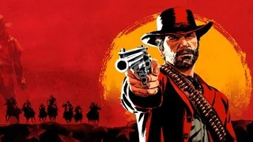

Red Dead Redemption es un videojuego de acción y aventura estilo sandbox ambientado en el Viejo Oeste que ha sido desarrollado por Rockstar San Diego y distribuido por Rockstar Games.
Sigue la historia de Arthur Morgan, un forajido de la banda de Dutch van der Linde, mientras enfrentan la caída del Viejo Oeste. Atrapado entre la lealtad a su banda y su propia redención, Arthur debe tomar decisiones que marcarán su destino en un mundo que ya no tiene lugar para forajidos.
Sigue la historia de John Marston, exmiembro de la misma banda, obligado por el gobierno a cazar a sus antiguos compañeros para asegurar la seguridad de su familia. En su lucha por la redención, John descubre que escapar del pasado es más difícil de lo que parece.
Rockstar Games, la famosa empresa creadora de juegos como Grand Theft Auto y Red Dead Redemption,
tiene su sede principal en Nueva York, Estados Unidos. La dirección exacta es:
Rockstar Games, Inc.
28 W 44th St,
New York, NY 10036,
Estados Unidos
Además de su sede en Nueva York, Rockstar Games tiene varios estudios en otras partes del mundo,
incluidos lugares como Edimburgo, Escocia, San Diego, California, Toronto, Canadá, entre otros.
Estos estudios colaboran en el desarrollo de los títulos más icónicos de la compañía.